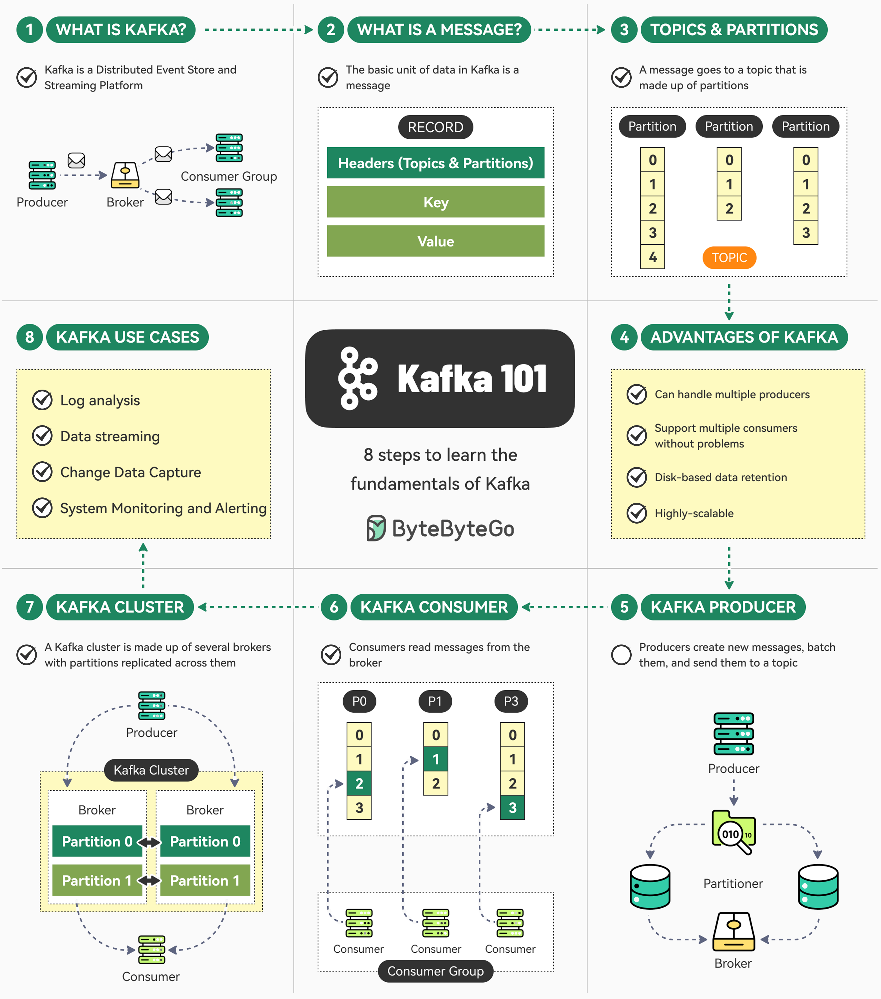

📨 Message Queues
Decoupling services with asynchronous messaging. Delivery semantics, Kafka's architecture, and when to reach for a queue vs when not to.
Messaging Fundamentals
A message queue is a buffer between producers (services that send messages) and consumers (services that process them). The key property: producer and consumer don't need to be running simultaneously — messages persist in the queue until consumed. This temporal decoupling is what message queues are fundamentally for.

Why Use a Message Queue?
Queues solve specific problems. Use one when:
- Work is slow and you don't want to block: sending email, processing video, generating PDFs, calling slow third-party APIs. Put the work in a queue, return immediately to the user, process asynchronously.
- Traffic spikes need smoothing: your order service can receive 10,000 orders/second in bursts, but your fulfillment service can only handle 1,000/second. The queue absorbs the burst; the consumer processes at its own rate.
- Services need to evolve independently: publishing an event to a topic lets multiple consumers react without the producer knowing about them. Adding a new consumer doesn't require changing the producer.
- Reliability matters for background work: if your worker crashes mid-processing, an unacknowledged message is redelivered. Without a queue, in-process background tasks are lost on crash.
Don't reach for a queue when: the operation is fast and the caller needs the result synchronously, the added complexity isn't worth it for a simple two-service deployment, or you'd just be adding latency for no benefit.
Delivery Semantics
This is the most important concept in messaging. Three levels:
- At-most-once: message delivered zero or one time. Fire-and-forget — fast, no overhead. If the consumer crashes after receiving but before processing, the message is lost. Use for: metrics, non-critical logging, cases where duplicate processing would be worse than message loss.
- At-least-once: message delivered one or more times. Producer waits for acknowledgment; if it doesn't get one, it retries. Consumer may receive duplicates (if it crashes after processing but before acknowledging). The default in most systems. Your consumer must be idempotent — processing the same message twice must have the same effect as once. This is not optional.
- Exactly-once: message delivered exactly once. Requires distributed coordination between producer, broker, and consumer. Expensive. Kafka supports it with idempotent producers + transactional APIs. Effectively requires the consumer's output operation (DB write) to be part of the same transaction as the acknowledgment. Hard to implement correctly across system boundaries.
In practice: design for at-least-once and make your consumers idempotent. Exactly-once adds complexity that usually isn't worth it. Idempotency key: store processed message IDs in Redis or the database, check before processing, skip duplicates.

Point-to-Point vs Pub/Sub
Point-to-point (queue): one producer, one consumer group. Each message is processed by exactly one consumer instance. Use for: task queues, job processing, anything where work should be done once.
Pub/Sub (topic): one producer, multiple independent subscriber groups. Each subscriber group gets every message. A message published to an "order-placed" topic is consumed by both the fulfillment service and the notification service — independently, at their own pace. Use for: event-driven architectures, fan-out, decoupled notification.
Dead Letter Queues (DLQ)
When a message fails processing N times (the retry limit), instead of being discarded, it's moved to a Dead Letter Queue. The DLQ is where you investigate and manually replay messages that couldn't be processed. Every production queue should have a DLQ configured, and you should monitor DLQ depth as an alert condition (non-zero DLQ = something is failing). Without a DLQ, failed messages either block the queue forever or are silently discarded.
Kafka Deep Dive
Kafka is a distributed event streaming platform — it's a persistent, ordered, partitioned log. It was designed for very high throughput (millions of messages/second), durability, and the ability for many consumers to read the same data independently. These properties make it different from traditional message queues in important ways.

Core Architecture
Kafka organizes messages into topics. Topics are divided into partitions — ordered, immutable sequences of messages. Messages are appended to the end of a partition (sequential writes to disk — extremely fast). Each partition is replicated across multiple brokers for fault tolerance.
The offset is the position of a message within a partition. Consumers track their offset (stored in a special __consumer_offsets topic). Crucially: consumers control their own offset. You can replay old messages by resetting the offset. Messages are retained for a configurable period (default 7 days) regardless of whether they've been consumed. This is fundamentally different from a traditional queue where messages disappear after consumption.
The partition key determines which partition a message goes to (hash of the key → partition assignment). Messages with the same key always go to the same partition — this guarantees ordering for a given key. Orders for the same user go to the same partition → processing order is preserved per user. Without a key, messages are distributed round-robin across partitions — max throughput but no ordering guarantees.
Consumer Groups
A consumer group is a set of consumers that together consume a topic. Kafka assigns partitions to consumers in the group — each partition is consumed by exactly one consumer in the group at a time. This is how Kafka scales consumption: add more consumers to the group (up to the number of partitions) and throughput scales linearly.
A topic can have multiple independent consumer groups. Each group maintains its own offset and gets all the messages. The orders topic can be consumed by the fulfillment group and the analytics group independently — adding the analytics consumer doesn't affect fulfillment. This is the pub/sub model: one topic, many independent consumer groups.
// Consumer group scaling:
// 6-partition topic, 3 consumers → each consumer handles 2 partitions
// Add 3 more consumers → each consumer handles 1 partition
// Add 7th consumer → sits idle (can't have more consumers than partitions)Durability & Replication
Each partition has a leader and zero or more followers (replicas). Producers write to the leader; followers replicate from it. The replication factor (typically 3) means the partition data exists on 3 brokers — the cluster can tolerate 2 broker failures without data loss.
acks (producer acknowledgment configuration):
acks=0: fire and forget, no confirmation. Maximum throughput, no durability guarantee.acks=1: wait for leader to write. If the leader fails before replicating, data is lost.acks=all(oracks=-1): wait for all in-sync replicas to write. Maximum durability. Use this withmin.insync.replicas=2: the write only succeeds if at least 2 replicas confirm it — tolerates 1 replica failure without data loss.
When to Use Kafka vs Not
Kafka is the right choice when: you need very high throughput (100k+ events/second), you want message replay (the log retention is a feature), multiple independent consumers need the same events, or you're building a streaming data pipeline (ETL, event sourcing, change data capture). Kafka is overkill when: you have low message volume (the operational overhead is significant), you need simple task queues (RabbitMQ or even Redis is simpler), or your team doesn't have Kafka expertise (Kafka is complex to operate correctly). Managed Kafka (Confluent Cloud, AWS MSK) significantly reduces the operational burden.
Schema Registry
In a pub/sub system with multiple producers and consumers, the message schema (field names, types, required fields) must evolve carefully — producers and consumers are deployed independently. Confluent Schema Registry stores schemas for topics and enforces schema compatibility rules. Backward compatible: new schema can read old messages (new fields have defaults). Forward compatible: old schema can read new messages (consumers ignore unknown fields). Use Avro or Protobuf with a schema registry for anything beyond small-scale experiments.
RabbitMQ & Messaging Patterns
RabbitMQ is a traditional message broker implementing AMQP. Where Kafka is a distributed log that retains messages for replay, RabbitMQ is a routing engine: it receives messages, applies routing logic, and delivers them to queues where consumers process and acknowledge them. Messages are typically removed from the queue after acknowledgment.
RabbitMQ Routing Model
The core abstraction: exchanges receive messages from producers; bindings connect exchanges to queues based on routing rules; queues hold messages for consumers. Producers publish to exchanges, not queues. This indirection is what enables flexible routing.
Exchange types:
- Direct: routes to queues where the binding key exactly matches the routing key. Use for simple point-to-point routing.
- Fanout: broadcasts to all bound queues, ignoring routing keys. Use for: notifications to multiple services, event broadcast.
- Topic: routing key pattern matching with wildcards (
*= one word,#= zero or more words). E.g., binding keyorder.#matchesorder.placed,order.shipped,order.shipped.us. Very flexible. - Headers: routes based on message header attributes rather than routing key. Rarely used — topic exchanges cover most cases.
Message Acknowledgment
Consumers explicitly acknowledge messages after processing. Until acknowledged, the message is in an "unacknowledged" state on the broker. If the consumer connection drops, the broker re-queues all unacknowledged messages and delivers them to another consumer. This is at-least-once delivery — your consumer must be idempotent. Negative acknowledgment (nack) rejects a message; you can choose to requeue it or send it to the DLX (Dead Letter Exchange, RabbitMQ's version of DLQ).
Prefetch count (channel.prefetch(N)): controls how many unacknowledged messages a consumer can hold at once. Setting prefetch=1 means a consumer only gets a new message after acknowledging the current one — slowest but most balanced distribution. Setting prefetch=100 lets consumers batch-fetch, increasing throughput but potentially causing uneven distribution (a slow consumer holds 100 messages while a fast consumer is idle).
Kafka vs RabbitMQ — When to Choose
| Dimension | Kafka | RabbitMQ |
|---|---|---|
| Primary model | Distributed log / streaming | Message broker / routing |
| Message retention | Days/weeks (retained by time or size) | Until consumed and acked |
| Replay | Yes — reset consumer offset | No — consumed messages are gone |
| Throughput | Millions/sec per partition | Tens of thousands/sec per queue |
| Routing | By partition key | Flexible exchange routing |
| Consumer independence | Multiple groups, fully independent | Competing consumers (or fanout exchange) |
| Operational complexity | High (Zookeeper/KRaft, partitioning) | Medium (clustering, mirrored queues) |
| Best for | Event streaming, high throughput, audit logs | Task queues, complex routing, RPC-style patterns |
Common Patterns
Work queue (competing consumers): multiple workers pull from the same queue; each message goes to one worker. Use for: parallelizing CPU-intensive work. Scale by adding more workers.
Request/Reply (RPC over messaging): producer sends a message to a request queue with a reply_to queue and a correlation_id. Consumer processes and sends the response to the reply_to queue. Producer polls the reply queue for responses matching its correlation_id. This turns async messaging into a synchronous-seeming call. Useful for: decoupled services where you still need a response, circuit-breaking expensive calls.
Priority queue: RabbitMQ supports per-queue priority (0–255). Higher-priority messages are delivered first. Use for: user-facing jobs get priority over batch jobs sharing the same worker pool.
Saga with messaging: each step of a long-running transaction publishes an event to trigger the next step. Failure publishes a compensation event. The messaging system provides the durability that makes sagas safe — if a step crashes mid-flight, the message is redelivered on recovery.